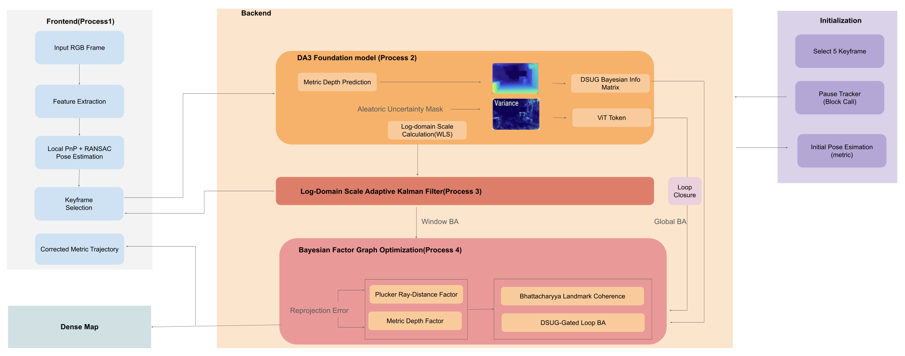
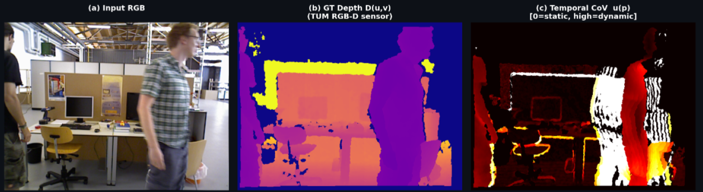
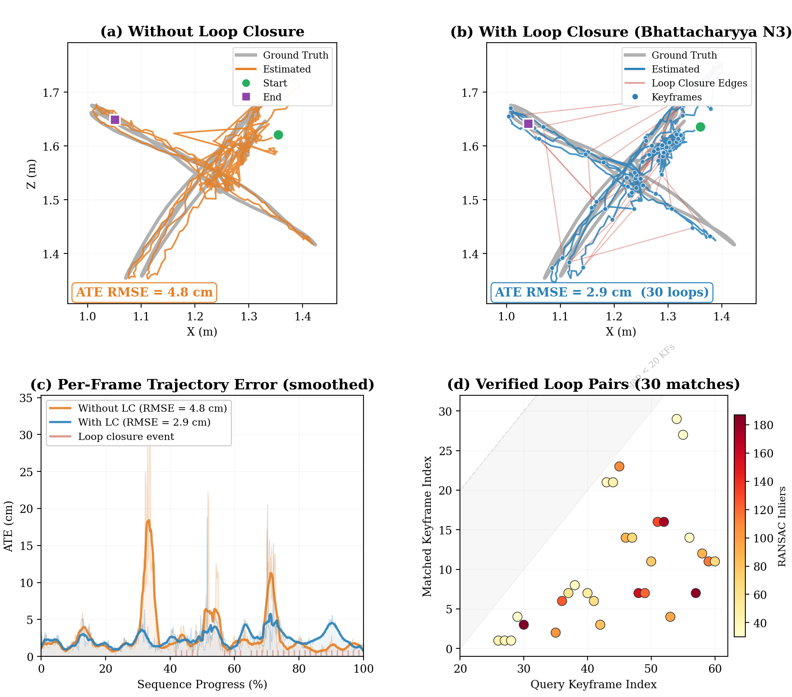
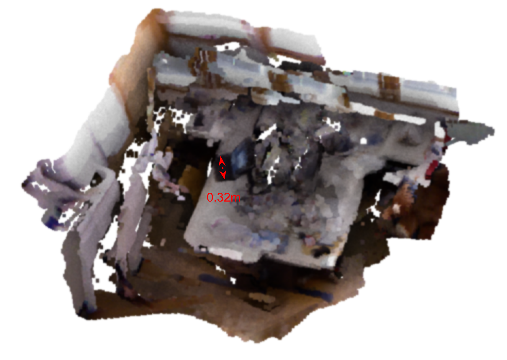
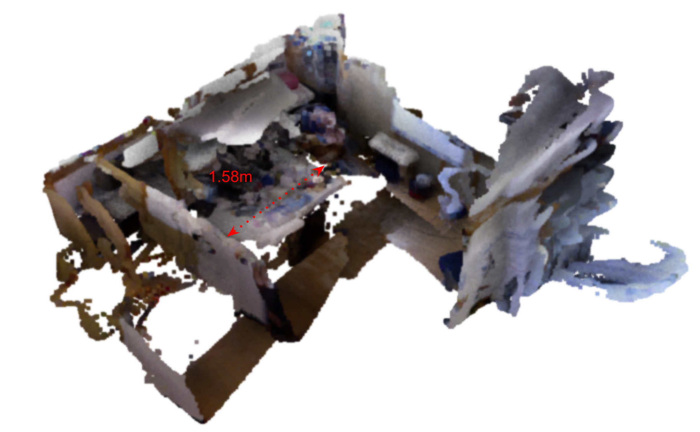

@article{prism-slam2026,
title={PRISM-SLAM: Probabilistic Ray-Grounded Inference for Scale-aware Metric SLAM},
author={Anonymous},
journal={Under review},
year={2026}
}The first monocular SLAM to output verified metric trajectories at runtime — SE3 ATE = Sim3 ATE on TUM fr1/xyz (2.9 cm, 3.3% scale error) — at 17 FPS.
Monocular SLAM historically suffers from unobservable absolute scale due to the scale ambiguity inherent in pinhole projective geometry, often exacerbated by severe tracking degradation in dynamic environments. We propose PRISM-SLAM, a real-time metric SLAM pipeline that rigorously integrates foundation model priors into a Bayesian probabilistic factor graph. We transform metric depth representations into a novel Plücker Ray-Distance Factor, mathematically resolving the scale ambiguity. Furthermore, we map predictive uncertainty directly into a Dynamic Scene Uncertainty Gating (DSUG) Bayesian information matrix, probabilistically down-weighting dynamic distractors without requiring explicit semantic segmentation. On TUM RGB-D, PRISM-SLAM achieves SE3 ATE equal to Sim3 ATE (2.9 cm, 3.3% scale error) on fr1/xyz — demonstrating, for the first time, that a monocular SLAM system can produce deployment-ready metric trajectories without post-hoc oracle alignment. Operating at 17 FPS (34× faster than WildGS-SLAM), PRISM-SLAM provides verified metric output for robotics and embodied AI using only monocular RGB input.

PRISM-SLAM uses a four-process asynchronous architecture. A high-speed C++ ORB tracker (~17 Hz, CPU) submits keyframes to an asynchronous DA3 GPU worker. The Metric Optimizer fuses DA3 depth with ORB map points via log-domain WLS and an Adaptive Kalman Filter, then injects depth constraints and applies refined scale back to the tracker. The DSUG-Gated Dense Map performs deterministic back-projection, filtering dynamic artifacts using the Bayesian DSUG gate.

Despite integrating metric depth models, no existing monocular SLAM reports SE3 ATE or verifies metric trajectory output. All rely on post-hoc Sim3 alignment unavailable at deployment.
| Method | Depth Prior | Eval | Metric? | FPS |
|---|---|---|---|---|
| ORB-SLAM3 | — | Sim3 | × | 30 |
| DROID-SLAM | — | Sim3 | × | 5 |
| MonoGS | — | Sim3 | × | 3 |
| MASt3R-SLAM | MASt3R | Sim3 | × | 15 |
| VGGT-SLAM | VGGT | Sim3 | × | — |
| WildGS-SLAM | Metric3D v2 | Sim3 | × | 0.5 |
| PRISM (ours) | DA3 | SE3 | ✓ | 17 |
| Method | FPS | Metric | fr1/xyz | fr1/rpy | ||
|---|---|---|---|---|---|---|
| Sim3 | SE3 | Sim3 | SE3 | |||
| ORB-SLAM3 | 30 | × | 0.9 | — | — | — |
| DROID-SLAM | 5 | × | 1.2 | — | 2.6 | — |
| GO-SLAM | 20 | × | 1.0 | — | 1.9 | — |
| MASt3R-SLAM | 1 | × | 0.9 | — | 2.7 | — |
| VGGT-SLAM | 0.5 | × | 1.4 | — | 3.0 | — |
| PRISM (ours) | 17 | ✓ | 2.9 | 2.9 | 4.9 | 4.9 |
ATE RMSE (cm). SE3 uses runtime metric scale (no oracle Sim3 correction). Scale error: fr1/xyz 3.3%, fr1/rpy 11.9%.
| Method | Metric | sit-static | walk-static | sit-xyz | walk-xyz |
|---|---|---|---|---|---|
| ORB-SLAM3 | × | 0.7 | 0.9 | 25.3 | 48.8 |
| DROID-SLAM | × | 0.4 | 0.3 | 17.6 | 21.4 |
| MonoGS | × | 1.1 | 3.6 | 16.2 | 18.9 |
| WildGS-SLAM | × | 0.5 | 0.6 | 4.1 | 5.2 |
| PRISM Sim3 | ✓ | 1.6 | 1.9 | 12.7 | 23.2 |
| PRISM SE3 | 1.8 | 2.7 | 20.0 | 26.8 |
ATE RMSE (cm), 600 frames. WildGS uses Metric3D v2 but reports only Sim3-aligned ATE (0.5 FPS, GPU-only).
| Method | Metric | Chess | Fire | Heads | Office | Pumpkin | Redkit. | Stairs | Mean |
|---|---|---|---|---|---|---|---|---|---|
| ORB-SLAM3 | × | 2.1 | 2.4 | 1.2 | 3.5 | 4.8 | 5.1 | 8.9 | 4.0 |
| DROID-SLAM | × | 1.8 | 2.1 | 1.3 | 2.7 | 3.4 | 4.2 | 12.5 | 4.0 |
| VGGT-SLAM | × | 4.1 | 3.9 | 2.8 | 5.5 | 7.2 | 8.4 | 15.2 | 6.7 |
| PRISM Sim3 | ✓ | 7.1 | 10.8 | 8.8 | 11.7 | 7.9 | 3.6 | 11.5 | 8.8 |
| PRISM SE3 | 7.1 | 17.7 | 68.4 | 15.5 | 7.9 | 12.1 | 11.9 | 12.0 |
ATE RMSE (cm), 400 frames. Scale errors: chess 0.8%, pumpkin 0.7%, stairs 5.0%, office 15.8%, redkitchen 15.5%, fire 19.4%. Heads is degenerate (near-zero baselines); excluded from mean. Mean over 6 non-degenerate scenes.
| Method | Sensor | balloon | balloon2 | person_trk |
|---|---|---|---|---|
| ORB-SLAM3 | RGB-D | 5.8 | 17.7 | 70.7 |
| ReFusion | RGB-D | 17.5 | 25.4 | — |
| DynaSLAM | RGB-D | 3.0 | 2.9 | — |
| PRISM SE3 (ours) | Mono RGB | 18.1 | 17.7 | 39.5 |
ATE RMSE (cm). All baselines use depth sensors; PRISM uses monocular RGB only with runtime metric scale.



Dense metric point clouds generated by DSUG-gated back-projection. Dynamic objects are automatically filtered by the same uncertainty gate used for tracking, producing clean reconstructions without semantic segmentation.
| Configuration | sit-st | walk-st | fr1/xyz | Mean (Δ) |
|---|---|---|---|---|
| Full system (ours) | 1.35 | 1.44 | 4.52 | 2.44 |
| A2: Ray → reproj (N1 off) | 2.20 | 2.37 | 5.41 | 3.33 (+0.89) |
| A1: Binary mask (N2 off) | 1.58 | 1.61 | 4.80 | 2.66 (+0.22) |
| A5: Linear-s Kalman (N5 off) | 1.49 | 1.62 | 4.70 | 2.60 (+0.16) |
| A4: Median scale (WLS off) | 1.42 | 1.57 | 4.65 | 2.55 (+0.11) |
ATE RMSE (cm). The Plücker ray factor (N1) is the single largest contributor (+0.89 cm when removed).
@article{prism-slam2026,
title={PRISM-SLAM: Probabilistic Ray-Grounded Inference for Scale-aware Metric SLAM},
author={Anonymous},
journal={Under review},
year={2026}
}